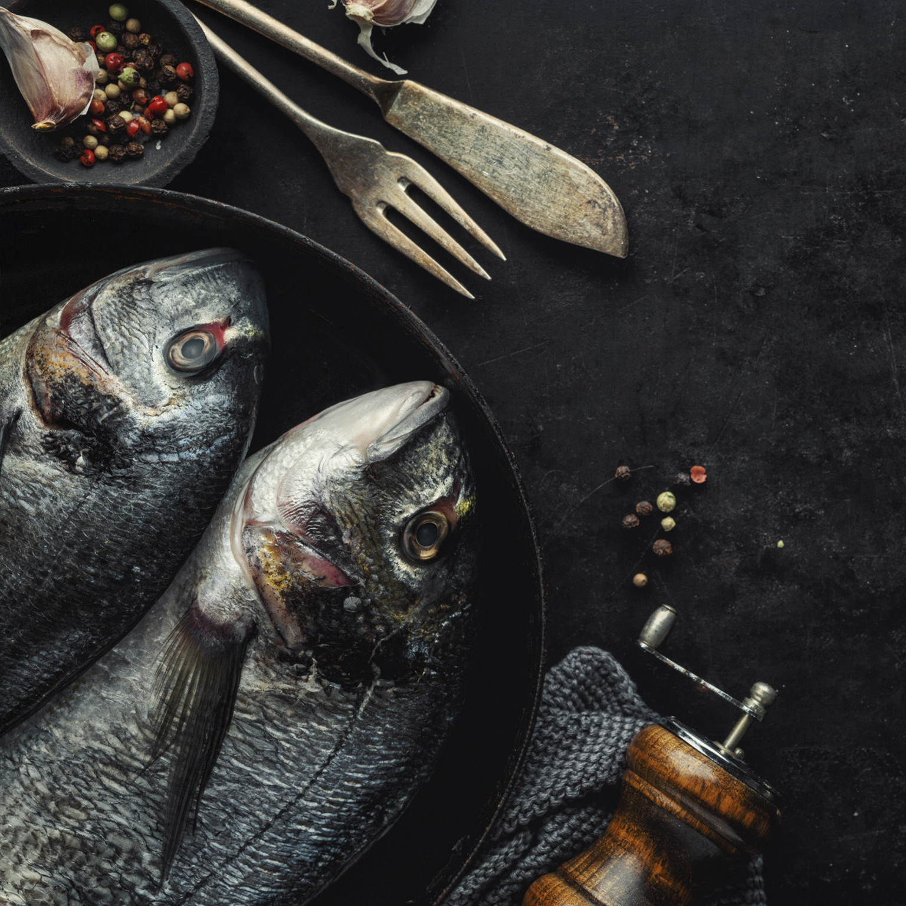
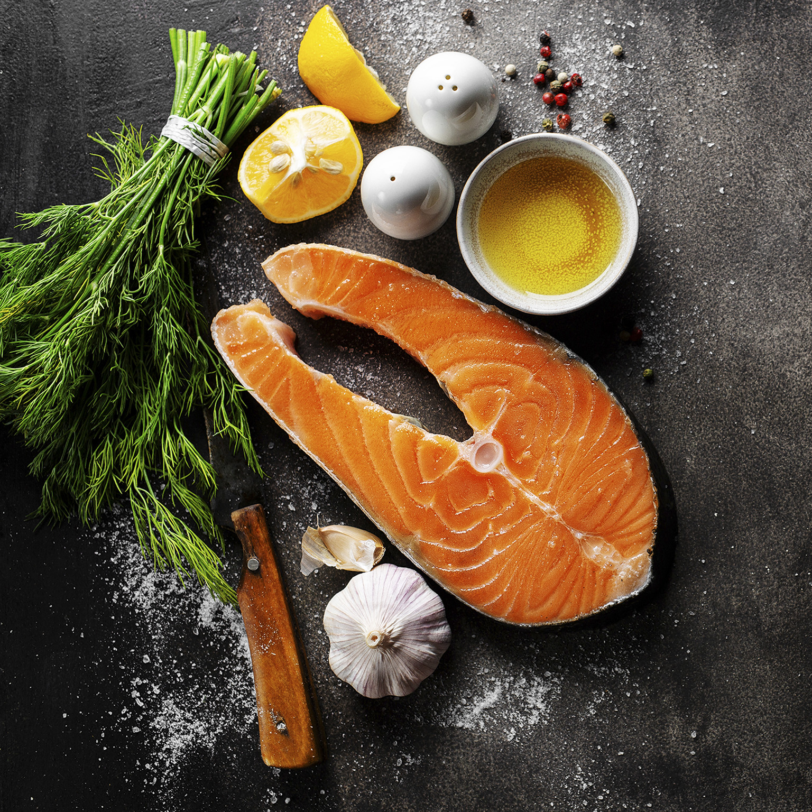
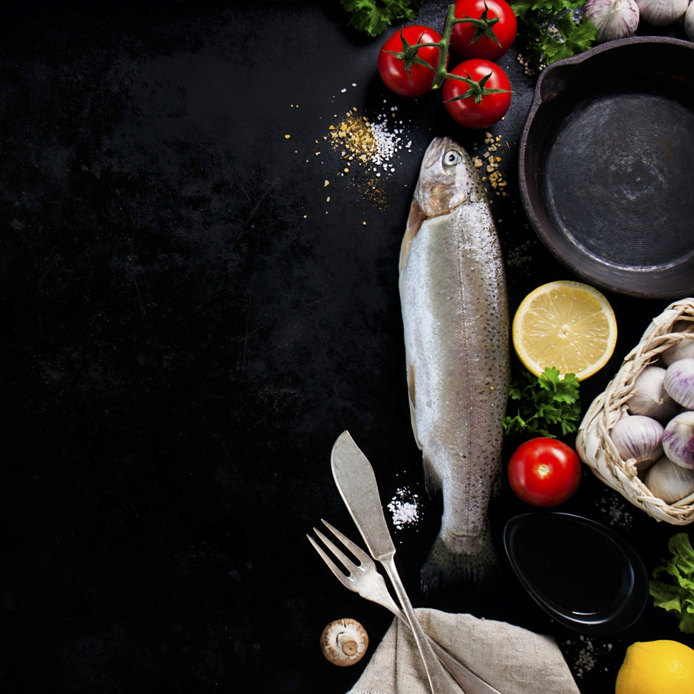

Bbq secrets

- Dorado -
Ingredients:
- 1 pack of Greenfish Dorado portions (1kg)
- 1 tablespoon Olive Oil
- 1 tablespoon Butter (melted)
- Salt & Pepper
- 6 tablespoons Butter
- 1 Shallot / small onion (chopped finely)
- 1 heaped teaspoon of Garlic (minced)
- 1/4 cup Chicken Stock
- 2 tablespoons lemon juice
Directions:
- Preheat a grill to medium heat
- Place Dorado portions in a bowl and season with salt and pepper
- Drizzle the fish portions with olive oil and 1 tablespoon melted butter
- Place the fish on a tray lined with foil and grill on medium heat for about 12 minutes
- To make the sauce: while the fish is cooking melt 1 tablespoon of the butter in a small saucepan
- Add finely chopped onion to the butter and sauté for about 2 minutes or until softened
- Add minced garlic and sauté for another minute
- Add the chicken stock and simmer until reduced by half
- Add the lemon juice and cook for 2 more minutes
- Remove the pan from the heat
- Add the remaining butter 1 tablespoon at a time until the sauce thickens and becomes glossy
- Add salt and pepper to taste if desired
- Pour butter sauce over the fish once ready to serve.It is important not to overcook Dorado. If you are worried rather take the fish out and test it with a fork. The fish should flake easily and still be moist when done.

- Salmon -
Ingredients:
- 4 6-8 ounce skin-on salmon fillets about 1-inch thick
- 2 tablespoons grape seed oil
- 2 teaspoons kosher salt
- 2 teaspoons freshly ground black pepper
- 1 lemon cut into wedges
Directions:
- Prepare the grill for direct cooking over high heat, 450°F-550°F. Brush the cooking grates clean and close the lid to heat.
- Generously coat the flesh side of the salmon fillets with oil and season evenly with kosher salt and black pepper. Grill the salmon skin side down over direct high heat with the lid closed, for about 6-8 minutes or until the fish lightens in color, becomes more firm to the touch and you can lift the fillets off the cooking grates without them sticking.
- Turn the salmon over, close the lid, and cook to 130°F or about 2-4 minutes for medium rare or longer to desired doneness. Transfer to a platter to rest for 1-2 minutes. Slide the salmon skin from the fillets and serve with wedges of lemon and tartar or cucumber dill sauce.

- Trout -
Ingredients:
- 2 whole trout, cleaned
- 1 tablespoon olive oil, divided
- 1 pinch coarse sea salt to taste
- 1 pinch ground black pepper
- ½ lemon, thinly sliced
- ½ sweet onion, thinly sliced
- 1 clove garlic, minced
- 2 sprigs fresh rosemary
- 2 sprigs fresh thyme
Directions:
- Preheat an outdoor grill for high heat and lightly oil the grate.
- Rub each trout generously with olive oil and sprinkle with sea salt; sprinkle inside of cavities with salt and black pepper. Place half the lemon and onion slices into cavity of each trout, along with minced garlic, and place a sprig of rosemary and thyme into cavities.
- Turn preheated grill down to low and place the trout directly onto the grill; cook until flesh flakes easily and the skins are browned, 6 to 7 minutes per side, flipping once.